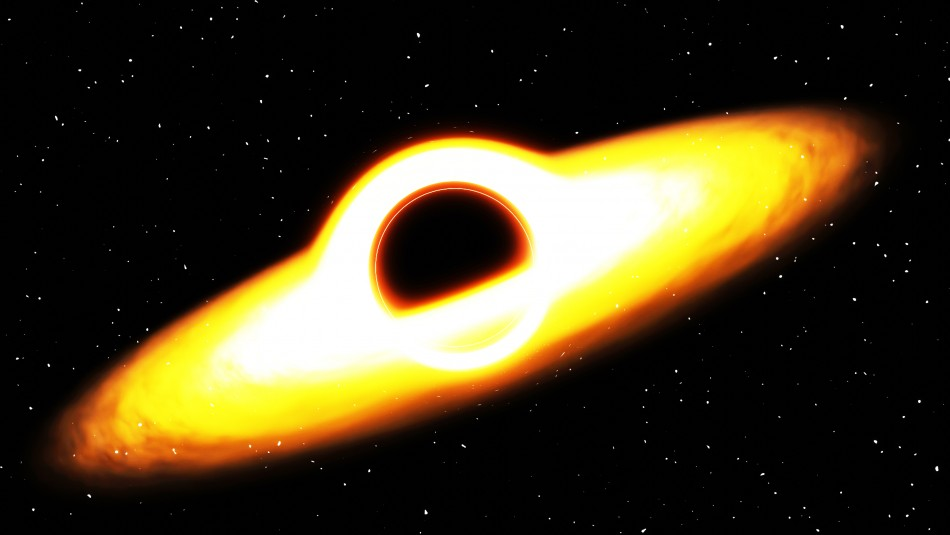

El ton 618
TON 618 es una cuásar extremadamente brillante y masivo situado en la constelación de Cetus (la Ballena) en el universo distante. Aquí tienes algunos datos clave sobre TON 618: Nombre: TON 618 es el nombre asignado a este objeto astronómico, que es un cuásar. El término "TON" proviene del Catálogo de Objeto No Estelar (TON), donde fue catalogado. Tipo de objeto: TON 618 es un cuásar, que es una fuente astronómica de energía extremadamente potente y distante. Los cuásares se forman cuando agujeros negros supermasivos en el centro de galaxias activas consumen grandes cantidades de materia. Brillo y distancia: TON 618 es uno de los cuásares más brillantes conocidos en el universo observable. Se estima que su luminosidad es equivalente a la de unos 140 billones de veces la luminosidad del Sol. Se encuentra a una distancia de aproximadamente 10.37 mil millones de años luz de la Tierra, lo que significa que la luz que vemos de TON 618 ha viajado durante más de 10 mil millones de años para llegar hasta nosotros. Masa del agujero negro: Se estima que el agujero negro supermasivo en el centro de TON 618 tiene una masa extraordinaria, que se sitúa en el rango de cientos de miles de millones de veces la masa del Sol. Esta masa es considerablemente mayor que la de los agujeros negros supermasivos encontrados en el centro de la mayoría de las galaxias. Estudios y observaciones: Debido a su extrema luminosidad y su inusual masa, TON 618 ha sido objeto de estudio y observación por parte de astrónomos y cosmólogos. El estudio de cuásares como TON 618 proporciona información valiosa sobre la evolución temprana del universo, así como sobre la formación y crecimiento de agujeros negros supermasivos.